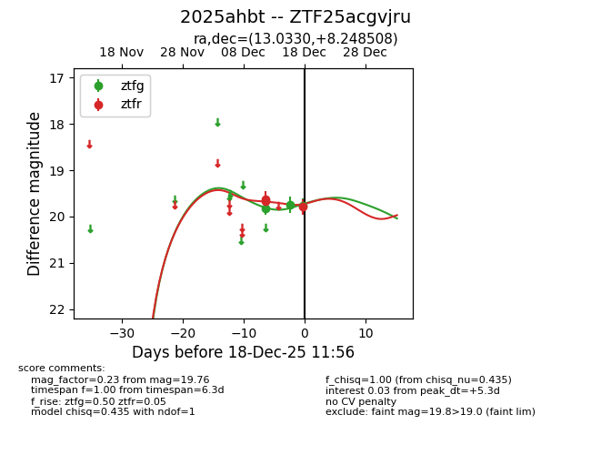
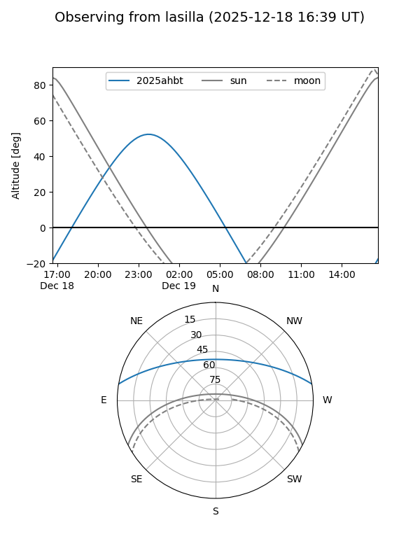
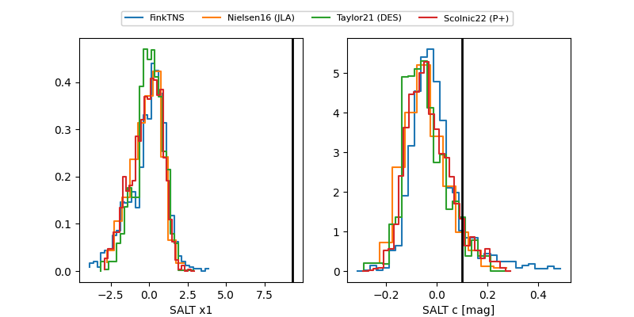

2025ahbt
Target 2025ahbt at 2025-12-18 11:57
Aliases and brokers:
FINK: fink-portal.org/ZTF25acgvjru
Lasair: lasair-ztf.lsst.ac.uk/objects/ZTF25acgvjru
ALeRCE: alerce.online/object/ZTF25acgvjru
TNS: wis-tns.org/object/2025ahbt
YSE: ziggy.ucolick.org/yse/transient_detail/2025ahbt
alt names
ZTF25acgvjru (ztf,fink_ztf)
2025ahbt (tns,yse)
Coordinates:
equatorial (ra, dec) = 13.0330,+8.24851
equatorial (HMS+DMS) = 00:52:07.92,+08:14:54.63
galactic (l, b) = (123.2285,-54.62284)
Photometry
last ztfg=19.76, ztfr=19.79
3 ztfg, 3 ztfr detections
Lightcurve

Visibility


Additional plots
